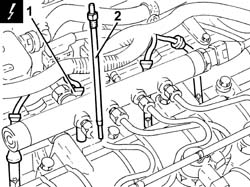

5520C10 GLOW PLUGS - R+R
- Path
- Procedures > 55 ELECTRICAL EQUIPMENT > 5520 ENGINE STARTING > 5520C COLD STARTING SYSTEM (DIESEL ENGINES) > 5520C10 GLOW PLUGS - R+R
- Kind
- repair procedure (removal / refitting; the operation number is the code)
- Applies to
- engines: 1.9 JTD 16V; all production periods
- Interactive page
- https://sloeber94.github.io/elrnDB-aGt/en/#/125001626
Applies to: engines: 1.9 JTD 16V; all production periods
 Removing
Removing
 Refitting
RefittingProceed with removal
- 1016A10 sound-proofing cover - r + r
Ensure that the ignition key is in the OFF position, then disconnect the negative battery terminal (-).
1. Disconnect the electrical connections from the heater plugs.
Name | Connector | |
|---|---|---|
- | Battery | See A1B BATTERY ( BATTERY NEGATIVE ) |
2. Undo and remove the glow plugs.
Name | Connector | |
|---|---|---|
1 | Heater plug | See A40 HEATER PLUGS (CYL. 1) |

Applies to: engines: 1.9 JTD 16V; all production periods
Refitting
RemovingPlace the glow plugs back in their housings and tighten them to the recommended torque.
 | Fastening | Component | Ø | Value (daNm) |
|---|---|---|---|---|
- | - | - | - | - |
Connect the electrical connections to the heater plugs.
Connect the negative (-) battery terminal
Proceed with refitting
- 1016A10 sound-proofing cover - r + r
.